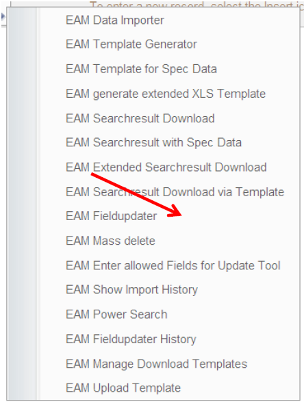
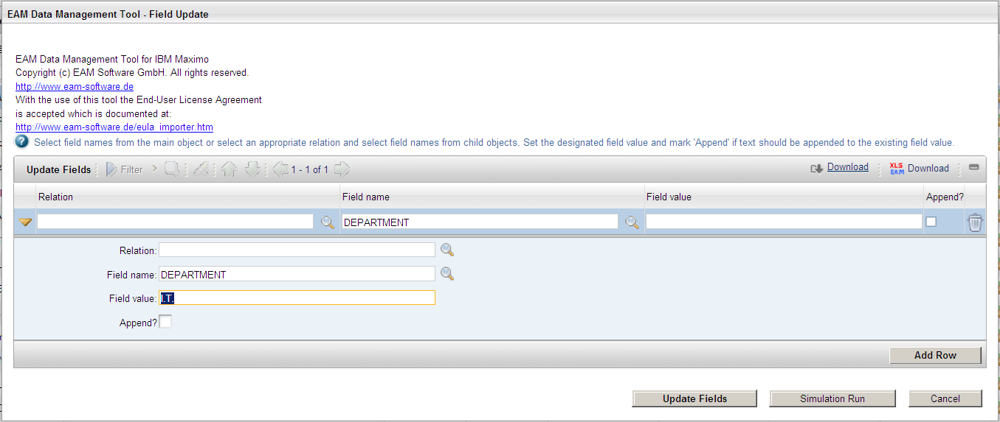
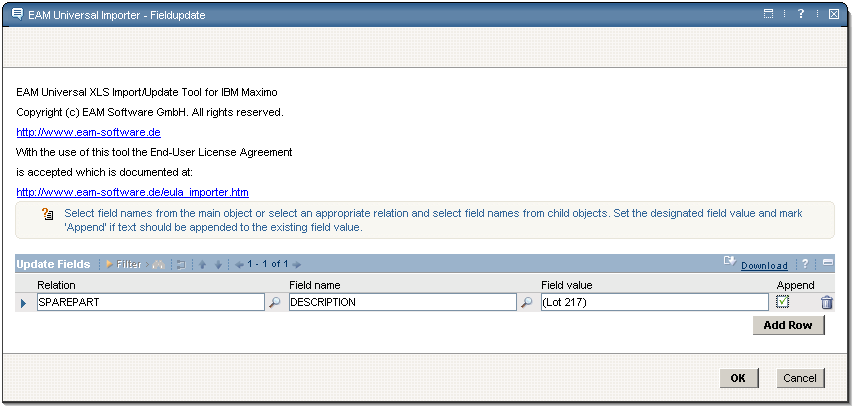
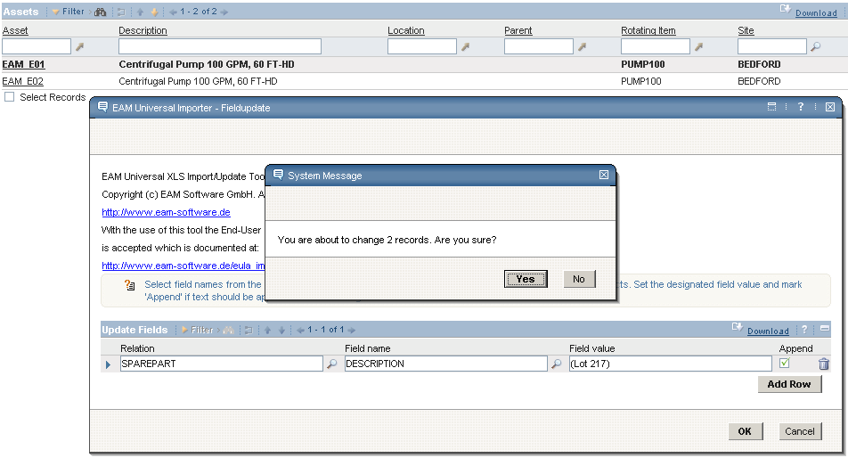
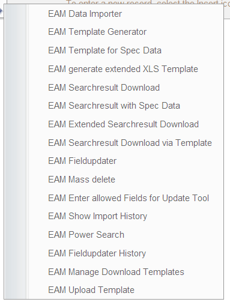
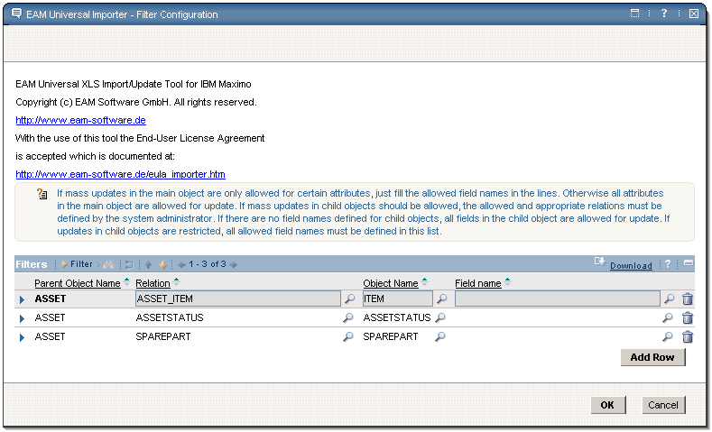
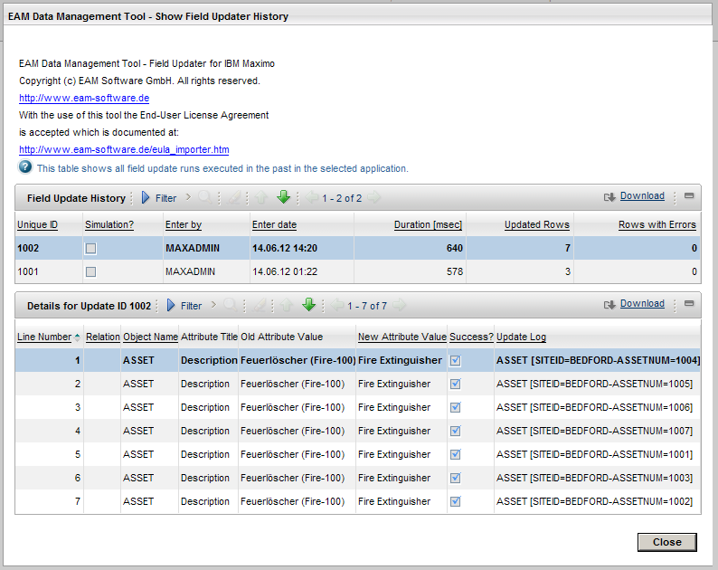
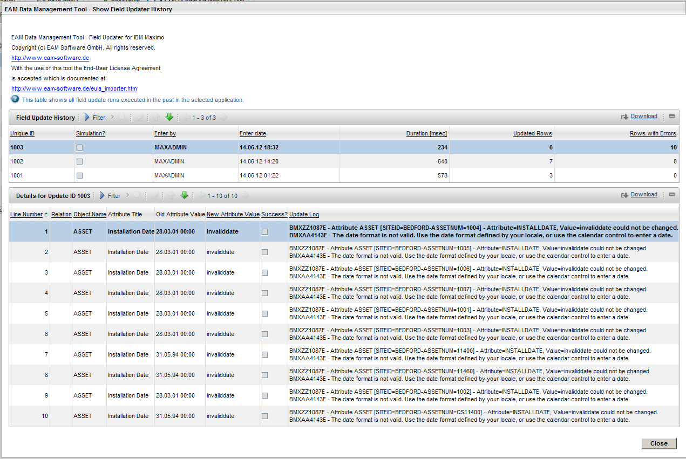

EAM Fieldupdater
In standard Maximo system it is intended to change one record at a time, then save your changes and then move to the next record. Keeping your data in Maximo up to date can sometimes mean to change an attribute in a lot of records which might be a daunting task in Maximo. One possible solution is of course the EAM Importer. You can export your data to Excel, there edit it and then re-import it into Maximo. Another possible solution for this task is presented in this chapter: The EAM Fieldupdater.
The EAM Fieldupdater allows you to update field values in objects of the current search result or in related objects which can be selected via a relation.
Note: To avoid this being a security risk the Maximo administrator can define the available attributes and relations with the tool "EAM Enter allowed Fields for Update Tool"! It is very important that this step is not skipped and only those fields and relations are explicitly allowed which should be available in the EAM Fieldupdater. By default, all relations and attributes are available in the EAM Fieldupdater. This setting also limit the relations which can be selected when downloading a XLS Extended Template or a search result with extended data.
To use the EAM Fieldupdater follow there steps:
-
Set a filter to select the records you want to change
-
Start the EAM Fieldupdater from the action menu:
 Illustration 46: Select Action menu item EAM Fieldupdater
Selecting this menu item opens the EAM Fieldupdater dialog. Illustration 47: EAM Fieldupdater dialog; change attribute DEPARTMENT to IT shows the dialog with an example where a user sets the attribute DEPARTMENT for all records of the current search result in the list view to the value IT.
 Illustration 47: EAM Fieldupdater dialog; change attribute DEPARTMENT to IT
-
Add a row for every field you want to change.
-
If you do not select a relation you can set values for the attributes of the main object of the current application. For "Field name" you can choose from the available and allowed fields for the current objects.
- If you select a relation from the list of available and allowed relations f or the object the "Field name" only allows you to enter field names of the corresponding child object of this relation.
- Insert the new attribute value in "Field value". This is a required field. If you want to clear the attribute value (set to NULL), then insert the special value ~null~
- If you want to append the given value to the already existing value then select
the checkbox "Append ?" (see illustration 48)
- Example: Some records are selected in the ASSET Application and you open the EAM Fieldupdater from the action menu. If you want to update fields from the ASSET object itself then you do not choose a relation and you can select from the available and allowed field names of the ASSET object.
- If you intend to update the the description of all the SPAREPARTS for your ASSETS in the search result you select the relation "SPAREPART". The lookup for Field name only shows you the available and allowed attributes for the SPAREPART object where you can select DESCRIPTION.
-  Illustration 48: Append a string to a description with the fieldupdater
- For Field value you enter the new field value. If the "Append" check box is not checked, the given field value will be set on the given attributes replacing the old value, otherwise the given value is appended to the current value of the specified attribute.
- If you want to change more than one attribute you can add new rows and specify other attributes.
- Click OK to start the update process. A confirmation message is shown
 Illustration 49: Confirmation Question for the EAM Fieldupdater
- If you confirm the system message with Yes, the fields are changed and the ilst view is updated.
NOTICE:
If there is an error during the Update (e.g. read only attribute, string too long, date
format not valid, inserted value not in value list,...) then the update is NOT interrupted
but continues. All error messages are collected and shown at the end of the update.
The main advantages of the EAM Fieldupdater:
- You save time (and money) because time consuming record by record updates can be replaced by a few clicks.
- No necessity for direct updates with SQL code in the Maximo Database! Direct manipulation in the database is dangerous and requires SQL knowledge (which also depends on the database system). The EAM Fieldupdater uses the Maximo Business Objects (Mbo's). This is secure, complies with your business logic reflected in the Mbos, and of course also recognizes the security settings and data restrictions.
- Mass data updates via the Fieldupdater are suggested to be performed by power user s of your Maximo installation. If at all SQL updates in the database were usually done by administrators only.
- Easy update of virtual attributes of the Maximo objects (like longdescription). This is no so straightforward with SQL since the longdescription is a separate database table.
- Current data and easy data maintenance leads to greater acceptance and satisfied users.
EAM Fieldupdater - Select allowed relations and attributes
By default the EAM Fieldupdater allows the user to choose from all defined relations and all available attributes from the current main object.
There are two main reasons why the administrator should specify the allowed fields and relations:
- Security . Without limitation the user could change fields which might otherwise not be visible in the User Interface. Or the user could change fields in objects (via a relation) where the user otherwise might not have access to in the first place.
- Usability . For every Maximo object there is a large number of relations defined. They are mostly used internally to gather related information for objects and are not intended to update or modify information.
To specify the allowed relations and attributes follow these steps:
Select the menu option "EAM Enter allowed Fields for Update Tool" from the action menu of the application.
 Illustration 59: Select Action menu item EAM Enter allowed Fields for Update Tool
This opens a dialog which shows the currently allowed fields and relations for the current application.
 Illustration 51: EAM Fieldupdater Filter Configuration dialog in Maximo 6.2
Note: If there are no restrictions for the current parent object then the list is empty and no restrictions are effective. All relations and attributes are available in the EAM Fieldupdater!
As soon as you specify at least one attribute or relation everything is forbidden except the now explicitly allowed relations or attributes.
This dialog allows you to specify allowed fields and relations. There are three possible ways to accomplish this:
- To allow the update of a field in the current object to updated via the EAM Fieldupdater select the field from the lookup of the Field name control without specifying a relation.
- To allow the update of all attributes in a specific child objec t in the EAM Fieldupdater select the relation name to the child object from the lookup near the Relation control.
- To allow the update of one specific attribute in a child object in the EAM Fieldupdater select the relation name to the child object. Then select the attribute from Field name lookup which now shows all attributes of the child object.
After you have finished the definition of permissable attributes and relations you click OK and your settings are saved in Maximo.
You can change your settings any time you want. Please also note that these settings are common for all Maximo users and security groups and can not be defined for users or security groups individually.
EAM Fieldupdater History
Depending on the configuration of maximex Field Updater each update process is logged.
 Illustration 52: EAM Fieldupdater History dialog
The Field Update History Dialog contains a main table and a details table. For each Field Update run there is one entry in the main table which shows the date, time, duration number of affected rows and the rows with errors.
The details table below the main table shows for every affected object the Object name, the relationship from the main object to the target object (if any), the attribute title, theold attribute value, the new attribute value, a success indicator and a update log.
If the field update for the object was successful, the update log contains information to uniquely identify the object. In case of an error a Maximo error message is also displayed and shows the reason for the error.
The following screenshot shows the error messages if you want to change the installation date of some assets to the value "invaliddate", which is clearly not a date:
 Illustration 53: Field Updater Histroy with error messages due to an invalid date